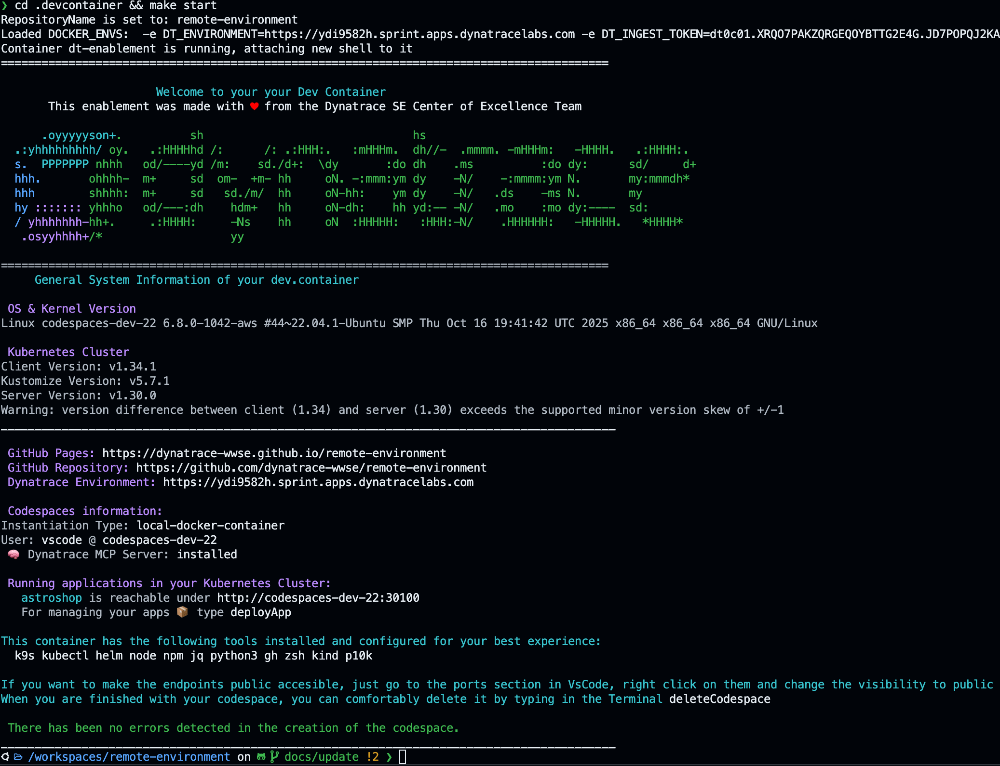

Tipps and Tricks#
Containerized environment#
Remember that the environment is a containerized environment. When you start a new Terminal type:
Host user#
The user on the host is ubuntu
❯ whoami
ubuntu
Check the environment is running#
❯ docker ps
CONTAINER ID IMAGE COMMAND CREATED STATUS PORTS NAMES
4fadf6961dae kindest/node:v1.30.0 "/usr/local/bin/entr…" 2 days ago Up 2 days 0.0.0.0:6443->6443/tcp, 0.0.0.0:30100->30100/tcp, 0.0.0.0:30200->30200/tcp, 0.0.0.0:30300->30300/tcp kind-control-plane
7ec72707a58c shinojosa/dt-enablement:v1.2 "/entrypoint.sh /usr…" 2 days ago Up 2 days
You'll notice that the user is ubuntu (default user) and that containers are running, the dt-enablement image and kind. The strategy used is docker-in-socket strategy, you can learn more about that here.
This allows us to have our dev environment in docker and the kubernetes also containerized but separate, for advanced use-cases you can delete the containers independently and attach them back as needed, meaning you can nuke the kubernetes cluster and create a new one without affecting the other container.
DevOps Mantra
Having a containerized environment allows you to play-around and test in a safe way, meaning feel free to install stuff, break it, and build it again which is somewhat the devops mantra "Build fast, fail fast, break fast & learn fast"
Shell into the environment#
cd .devcontainer && make start
Shell into the environment

When you shell into the environment, the make start command will check if a container with the name dt-enablement is running, if so, it'll connect to it, if not, then it'll create a new environment. Once inside the container the Dynatrace greeting will appear with information about the environment.
Container user#
To make sure you are inside the container you can also type:
❯ whoami
vscode
Show the greeting, reload the functions#
The default terminal is zsh with powerlevel10k enabled for a better dev experience. If you want to show the greeting jsut type printGreeting or zsh. Difference is with a new shell (zsh) the functions are loaded again (good to know if you are developing the framework, you can add your custom functions in my_functions.sh).
zsh
Nuke the environment#
Let's say you want to start fresh, delete the dt-enablementcontainer and nuke kind this is very simple, just kill and delete the containers and start again.
This will kill and delete the containers
docker kill kind-control-plane && docker rm kind-control-plane
docker kill dt-enablemenent && docker rm dt-enablemenent
Restart the environment#
For restarting the environment just be sure there are no containers running nor stoped, otherwise it'll start them and then type make start inside the .devcontainer folder
cd .devcontainer
make start
Kubernentes#
(WIP) - [ ] Start/Stop/Create new Kind cluster - [ ] Navigate using k9s - [ ] Lise t Apps, deploy new Apps - [ ] Create new Terminal inside the dev container